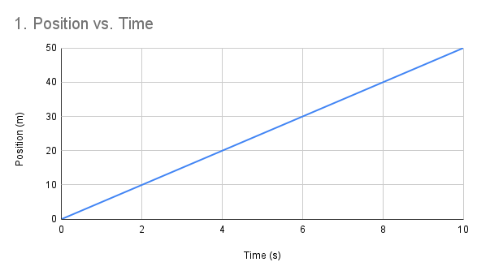
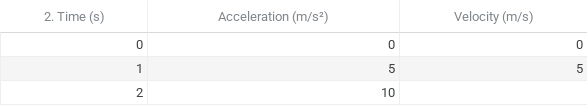
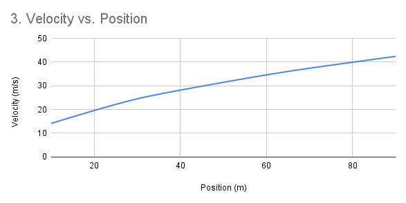

Which equation is correctly derived from this graph?
Which value correctly fits the blank?
What is the simplified equation and linearizing proportion of this graph?
4. A retail employee evaluates two shopping carts in regards to speed and time. Shopping cart A travels with uniform acceleration. Shopping cart B has 50% more velocity but 75% less time and uniform acceleration. What is the relationship of velocity between the two vehicles? Initial velocity is 0.
5. Starting from rest, a cheetah runs 2,000 meters in 50 seconds. What is the animal's acceleration? Round to the nearest tenth.
6. A water bottle is rolled on the ground with an initial velocity of 2 m/s. It stops after 1.2 seconds with an acceleration of 4 m/s2. What is the water bottle's displacement? Round to the nearest tenth.
7. Starting from rest, a 5 meter-long go-cart drives its length five times over before coming to a stop 10 seconds later. What is the go-cart's acceleration? Round to the nearest tenth.
8. A ball is thrown down from a bridge. Data is recorded over 10 seconds. Which of the following graphs represent this?
9. A ball is thrown down onto a trampoline and bounces with perfect elasticity. Which of the following velocity and acceleration diagrams represent this?
10. A boat is released into the ocean. After about 375.7 meters and 62.3 seconds later, it stalled and faced mechanical issues. What was the ship's acceleration before requiring attention? Round to the nearest tenth.